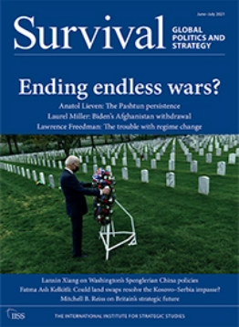
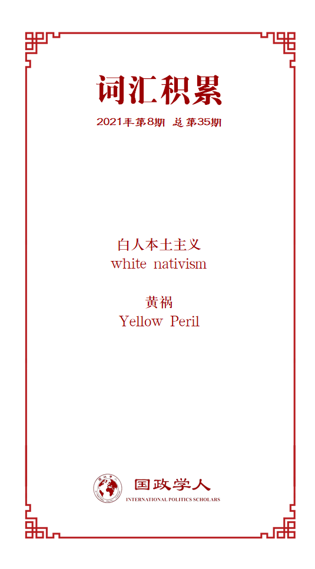

收录于合集 #中美关系 13个

作品简介
【编译】 房宇馨（国政学人编译员，北京外国语大学国际关系学院）
【校对】 李源
【审核】 廖泽玉
【排版】 胡蝶
【美编】 游钜家
【来源】 Xiang, L. (2021). US–China Relations in the shadow of Spengler. Survival , 63(3), 45-53.
【归档】 《国际关系前沿》2021年第8期，总第35期
期刊简介

《生存：全球政治与战略》（ Survival ），由英国国际战略研究所（IISS）定期出版的双月刊杂志，发表有独创见解的文章，刊载重要文件及讲话全文以及书刊评论，分析全球政治和战略形势。
斯宾格勒阴影下的中美关系
US–China Relations in the Shadow of Spengler
内容提要
特朗普主义在国内激化了严重的种族矛盾，也将美国的外交政策一步步推向种族主义化。特朗普将白人本土主义（white nativism）延伸到外交政策之中，不仅把中国定位为一个大国敌手，更将中国塑造成了一个必不可相容的外敌形象。尽管拜登批评特朗普应为美国的分裂负责，但两人却在对华政策上达成了共识。这是一个极度危险的信号——拜登虽然不是一个种族主义者，但其选择的对华政策依旧延续了特朗普时期的种族仇恨色彩。
美国的政治精英们仍然怀有一种“单极幻想”，纠结于如何挽救美国的衰落，避免美国主导的世界秩序走向崩溃。面对特朗普所引发的美国分裂危机，政治精英们认为有必要通过将中国描绘为一个外来威胁来转嫁国内矛盾。这是一个严重的政治和战略错误，不仅无法奏效，还可能在国内外的华人中引发强烈的反西方情绪。
文章导读
01
斯宾格勒幽灵
西方战略中出现种族主义思想并非什么新鲜事。一个多世纪前，奥斯瓦尔德·斯宾格勒（Oswald Spengler）曾预言西方文化终会没落，并给西方的白人领导者留下了一个可怕的命题：如果有色人种的崛起正在促使西方走向衰亡，那么白种人便别无选择，只能对其进行灭绝或遏制其进步。斯宾格勒认为，最差的结局是各种族迫不得已而必须走向融合。当面对种族仇恨，纳粹德国实施了种族灭绝。 现如今的西方世界则选择了通过经济遏制和军事恐吓的手段，来打压当今最为强大的非白人国家——中国。
十九世纪末，德国皇帝威廉二世炮制出“黄祸”（Yellow Peril）一词，宣扬东亚人对西方白色人种的心理文化入侵和生存威胁，以此论证西方征服东方的合理性与正当性。 到了二十一世纪，直接针对中国的“新黄祸论”开始为西方政客提供实质性的政治掩护 ：“黄祸论”被嫁接于善与恶、民主与威权的道德较量中，以捍卫和推进西方所谓的“普世价值”。这一立场有可能引发一场新的斯宾格勒冷战。
然而，当代美国缺少乔治·凯南这样的战略思想家，没有人能够起草一份“长电报”来解释中国的近代史或中国迅速崛起的内在文化根源。在此情况下， 如斯宾格勒在《西方的没落》中的预判的一样，美国选择诉诸衰落论（declinism），重新使用“黄祸”一词来对华人进行种族诽谤。 而在美苏冷战时期，美国没有在种族问题上向苏联发起攻势，因为美国认为，苏联作为一个高加索大国，始终是白人世界的一员。
对于美国而言，衰退论是一种病态的、顽固的恐惧。当政治精英们需要将美国国内的问题归咎于他国时，衰退论便可发挥最大的利用价值。对西方衰落的焦虑、对异族他者的恐惧，以及预感东方将超越并奴役西方的斯宾格勒式担忧交织在一起，导致美国认为中国人不值得拥有经济和技术上的进步。这种观点极具修正主义色彩。
在全球种族主义抬头的背景下，西方反华情绪高涨，新冠疫情暴发以来愈加严重。在疫情之初，沃尔特·拉塞尔·米德（Walter Russell Mead）便将中国称为“真正的亚洲病夫”。一开始，许多西方人反感这种种族主义论调，但当特朗普等美国政客开始一再提及“中国病毒”（the Chinese virus）和“功夫流感”（Kung flu），西方媒体最终变得麻木。 特朗普和他的追随者使此类种族主义语言在公共话语中被默认为是一种正常化的表达，但却激起了中国民众前所未有的民族主义情绪。
02
华而不实的大战略
美国在亚洲发起的安全战略也有一种危险的“黄祸”色彩。根据最新解密的一份印太战略文件，美国的目标是在亚洲建立一个小北约，以遏制中国的崛起和西方的衰落。但美国为实现这一目标而创设的“印太”地缘政治概念有些自作聪明：美国希望让盟友看到自己诚意如旧，也希望向盟友展现出自身的种族包容性。印太战略的核心是四方安全对话（Quad），这一机制由两个白人大国（美国和澳大利亚）和两个“荣誉白人”大国（日本和印度）组成。 作为七国集团中唯一的非白人国家，日本长期以来一直享有“荣誉白人”的地位。相比之下，印度更受西方欢迎的原因在于，其民主制度和大英帝国血统使其更符合白人世界的种族气质。
或许是因为新的地缘政治概念和旧的种族主义假设，许多美国决策者和分析人士似乎相信，美国盟友支持美国将中国视为主要竞争对手，从而强化了美国的强硬立场。但是， 这样的全球民主共识即便存在，它也是非常脆弱的。 因为，美国的欧亚盟友并不支持中国的政权更迭。
此外，美国的印太战略可以说是言过其实。亚太国家会强烈抵制在中美之间做出选择。 美国想要在亚洲建立一个小北约，以维持地区军事平衡。然而，到目前为止，美国既没有组建一个完备的军事组织，也没有出台一项明确的军事战略。 目前，唯一值得注意的进展是四方安全对话的组建，但它远未成为一个协调一致的军事指挥中心。虽然四国会举行首脑会议和联合军事演习，但其合作能力似乎没有太大提高，不具备对中国构成威慑的实力，尤其是在拜登政府会优先考虑外交而非军事的战略背景之下。
不过，印太战略的致命缺陷在于经济方面。 作为印太战略中的两个主要大国，太平洋最东端的美国和印度洋最西端的印度，均不是印太这条关键地缘经济带上重要贸易投资协定的缔约方。 美国退出了《跨太平洋伙伴关系协定》（TPP），这一协定后来发展为《全面与进步跨太平洋伙伴关系协定》（CPTPP）。而印度也退出了《区域全面经济伙伴关系协定》（RCEP）谈判。RCEP所覆盖的人口及GDP总量占到全球30%以上，是史上最大的贸易集团。中国是RCEP缔约国，已明确表示愿意加入CPTPP。因此，要使印太战略协调一致，拜登政府势必面临强大压力：要么选择加入CPTPP，要么说服印度加入RCEP。然而，这两种选择都不具备可行性。美国国会以及民主党内的进步派必定会阻止美国加入CPTPP，而印度总理莫迪也不会同意印度加入RCEP。鉴于其他地区国家在经济上对中国的依赖，它们必然不会支持美国的积极对抗战略。从这个角度看，美国的印太战略无论在军事上还是政治上都显得非常单薄。
尽管存在这些战略弱点，拜登政府仍强调通过多边外交来遏制中国，并意图依靠其盟友来应对来自中国的挑战。但要重振美国作为一个多边盟友的声誉，还需要做出重大努力。特朗普任内多次退出多边机制，反复攻击多边机构。美国前国务卿蓬佩奥在访问印太各国时，会歇斯底里地攻击中国，并威胁地区国家必须在美国和中国之间做出选择，使得许多地区领导人对其深感厌恶。这种行为也让日本和韩国等大多数亚太国家认识到，它们对美国的唯一价值在于是否明确地在中美之间表明立场，否则将付出牺牲对美双边关系的代价。总的来说， 蓬佩奥的外交意图和风格大大削弱了美国在印太地区的声誉和信誉。
诚然，拜登政府改善了美国外交的基调，并且专门增设了“印太协调员”一职。但鉴于美国信誉的下降，印太战略不太可能继续成为美国对华政策的关键因素。印太战略可能会彻底沦为“鸡肋”——食之无味，弃之可惜。
03
更加微妙的美国政策
尽管特朗普和拜登的对华政策表现出了明显的连续性，但所谓的两党共识实际上是建立在摇摇欲坠的国内事务和战略基础之上的。美国的内部危机源于人口结构的变化，即白人即将失去主导地位。当老牌的政治精英试图通过坚持民主价值观来维护国家团结时，特朗普等民粹主义领导人却大肆攻击这种价值观，还攻击美国政治的程序规则，包括选举过程本身。随着曾经相对稳定、和谐的两党制陷入了一种恶性混乱， 实现真正的两党合作只能成为一种空想。 当拜登政府意识到这一严峻现实，不再试图在无法达成共识的领域寻求共识时，美国或许更有能力在客观分析现实情况后，制定出一项公正有效的对华政策，而不再沉溺于昔日的政治旧梦。 有几点事实值得注意 ：首先，与俄罗斯政府不同，中国政府不会干涉美国国内政治；第二，对比美国持续的政治僵局，中国的治理体系的确更胜一筹，这种优势在抗击新冠疫情的过程中表现得极为明显；第三，华裔并不是导致西方种族动乱和经济衰退的主要因素。相反， 中国移民向来是与美国社会高度同化并且能够展现高效生产力的“模范少数族裔”。
更广泛地说，承诺改善中产阶级的处境是帮助拜登击败特朗普的关键所在。根据拜登的政治考量，未来四年的外交事务将与美国内政密切相关。但依据民主党去年9月发布的一份研究报告，大多数美国中产阶级对与中国进行新冷战不感兴趣。他们更加欢迎中国加大对美国的投资，以便创造更多的制造业就业岗位。因此， 印太战略中隐含的冷战内涵根本无助于拜登的“中产阶级外交政策”。 抨击中国不仅不会帮助拜登在即将到来的国会和总统选举中赢回中产阶级，击败右翼民粹主义，相反， 与中国接触可以减缓或遏制中产阶级的衰落趋势。
在科技等领域，美国依然在毫不掩饰地向中国传递种族主义信号：由于中国的内部制度没有实现西方化，所以中国不配拥有技术进步。这种态度与斯宾格勒90年前宣扬的有关技术发展的种族主义倾向是相呼应的。他强烈反对技术进步，因为它可以武装“有色人种”来对抗白人文明。用他的话来说：“被剥削的世界正开始向其领主复仇。有色人种——他们同样熟练地和更加知足地工作——将用无数双手动摇白人经济组织的根基。”美国担忧未来的世界将由中国统治，所以迫切地反对中国的技术进步。然而，中国从未表达或产生一种统治世界的历史雄心，并且始终愿意参与国际技术发展规则的制定。 如果美国继续臆测中国怀有霸权野心，只会在错误的战略道路上越走越远，不仅会助长中国的民族主义情绪，甚至有可能在所谓的种族预言问题上引火自焚。
当然，在政治合法性问题上，中西方之间仍然存在着根本性的争议。西方普遍认为，中国出现的任何政治问题都源于缺乏真正的民主。这是一种过于简单化的判断。在西方传统中，合法性意味着民众对权威的接受，而权威又意味着在一个既定政府中的特定权力地位。因此，在西方民主语境中，政治合法性取决于民主的权力结构安排。
然而，中国文明从来没有在政治上发展出明显的结构层次。政治合法性的实质是，广大民众对政府的行动有信心，并认为这些行动在道德上是适当且合法的。按照这个标准，中国人民认为中国共产党领导下的政府是合法的。然而， 西方的自由民主正统观念阻碍了中西方就这一根本分歧进行认真对话。
近来，基辛格警告中美之间存在爆发冷战的风险。事实上，中美关系中最令人担忧的方面是，两国都坚持展现不妥协的强硬姿态。美国将中国视为其主导地位的首要战略挑战者，而中国则在积极维护其在当今世界的合法地位。在两国国内，强硬派均施加了巨大的压力，温和派的声音基本被边缘化。这种情况让人联想到了一战前夕，每一个大国都抱着一种一劳永逸的心态展开攻势，意图通过一场战争来结束所有的战争。而在当今世界，“星星之火可以燎原”，一旦发生全面冲突，那后果难以想象。 美国和中国必须小心，不要如梦游般使世界再度滑向另一个1914。
在西方的煽动之下，上个世纪的种族部落主义正在抬头。但是，大国抗衡的现状表明，西方联合反华的战略既不道德，也不会长久。因此，中国不应对西方的敌对言论反应过度。当下的西方国家，尤其是美国，正处在一个微妙的时刻：随着白人霸权在许多西方国家的瓦解，它们开始对自身的衰落产生真实的警觉。中国不必因出现一个由白人主导的民主联盟或亚洲版的北约而枕戈待旦，因为两者似乎都不具备真正落实的可能性。（作者：相蓝欣，日内瓦大学高级国际问题研究院教授）
译者评述
本文从种族主义的角度分析了特朗普和拜登的对华政策，其中许多判断都比较具有洞察力。总体来看，作者认为将种族主义思维引入中美关系是极度危险的。
作者指出，种族主义外交政策正在白宫经历某种程度的复兴。由于美国对华心态日益焦虑，在反华手段的选择上已经无所不用其极。在特朗普上任之前，所谓的黄祸论以及仇外心理、仇华心理、反亚裔种族主义、麦卡锡主义一直是美国政治精英用来建立公众共识、实现美国国内外政策目标的有力工具。到了特朗普任内，美国开始在种族问题上反复向中国发起攻击。2019年，美国国务院政策规划司司长凯润•斯金纳就曾公开声称，美苏之争形容为“西方大家庭的内斗”而中国是“非高加索人种的大国竞争者”，中美竞争是两大人种之间的冲突。这种言论带有明显的种族主义偏见，将中美竞争扩大到了种族层面，也直接反映出了“白人至上论”、“西方文明中心论”在美国外交政策中的蔓延。在新冠肺炎全面暴发后，特朗普为将美国自身危机转嫁给中国，选择将新冠病毒“种族主义化”，进一步释放了西方世界对亚洲人，尤其是中国人的潜在偏见，使新“黄祸论”卷土重来，在美国引发了一场丑陋的种族主义浪潮。特朗普的这种外交政策实际上是在造成整个世界在种族上的分裂。
另外，作者指出，美国抛出种族对抗的言论也是为了使中美在亚太地区的冲突合理化，同时拉拢更多盟友加入反华阵营。美国不断强调华裔对西方白人在权力、价值观、秩序和文化上的威胁，将中美竞争扩大为“西方文明与非西方文明的竞争”，甚至赋予了日本和印度“荣誉白人”大国的地位，正是要把中国摆在整个西方世界的对立面。然而，这种观念并没有在其他国家中获得广泛共识，因为欧亚盟国并不完全认同中美在种族上的对立，也不可能在中美之间选边站队。
词汇整理

文章观点不代表本平台观点，本平台评译分享的文章均出于专业学习之用, 不以任何盈利为目的，内容主要呈现对原文的介绍，原文内容请通过各高校购买的数据库自行下载。
好好学习，天天“在看”